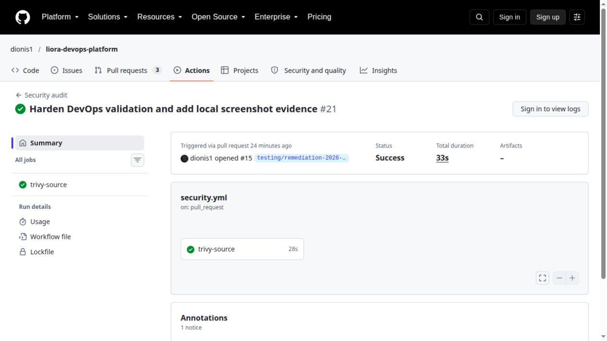
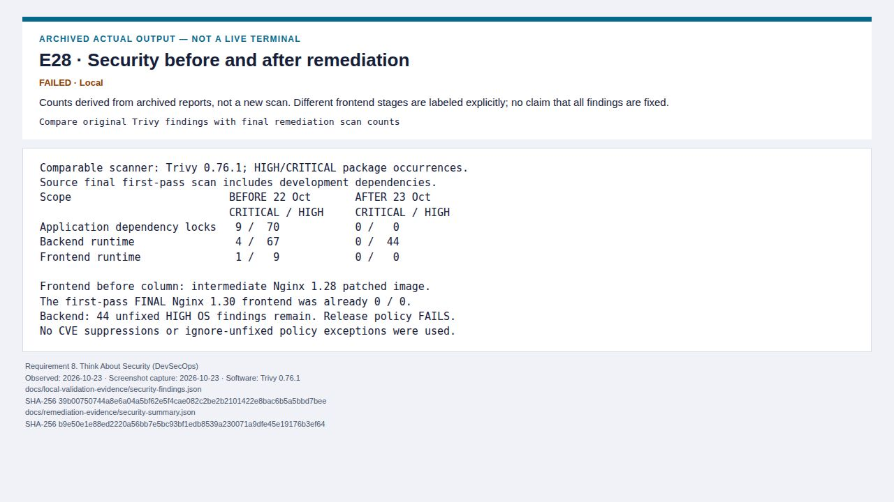
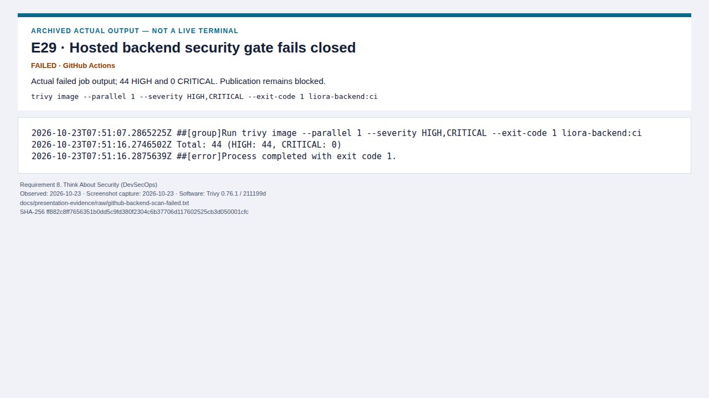
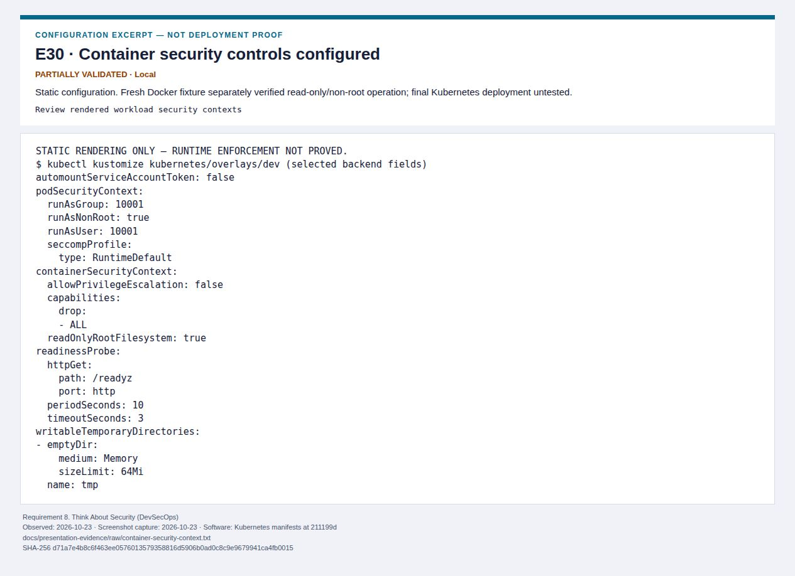
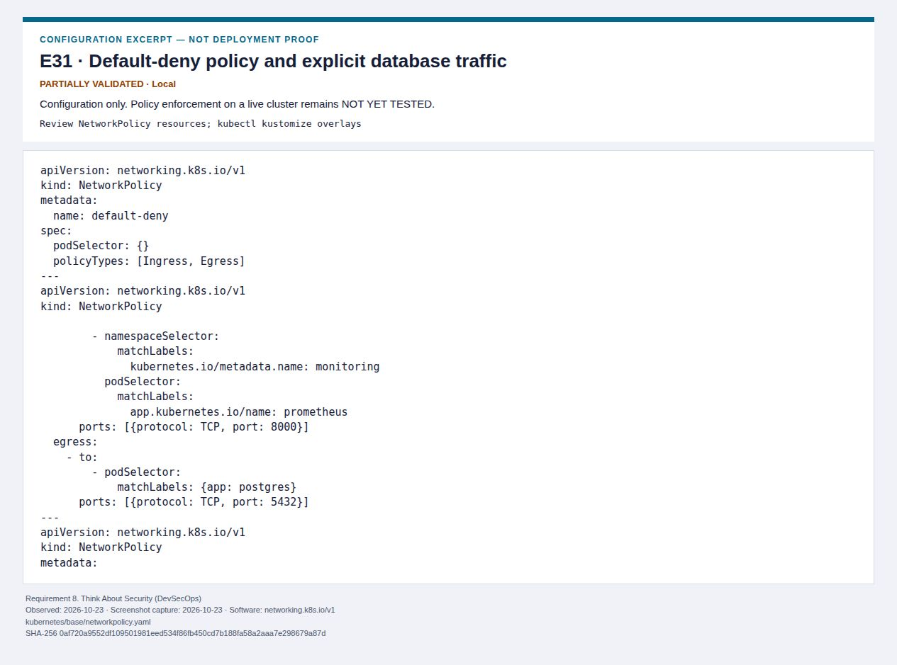
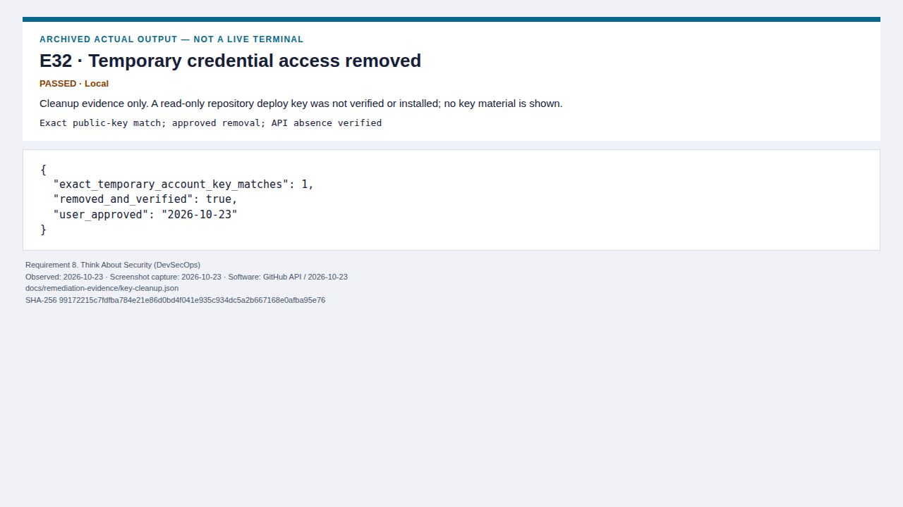
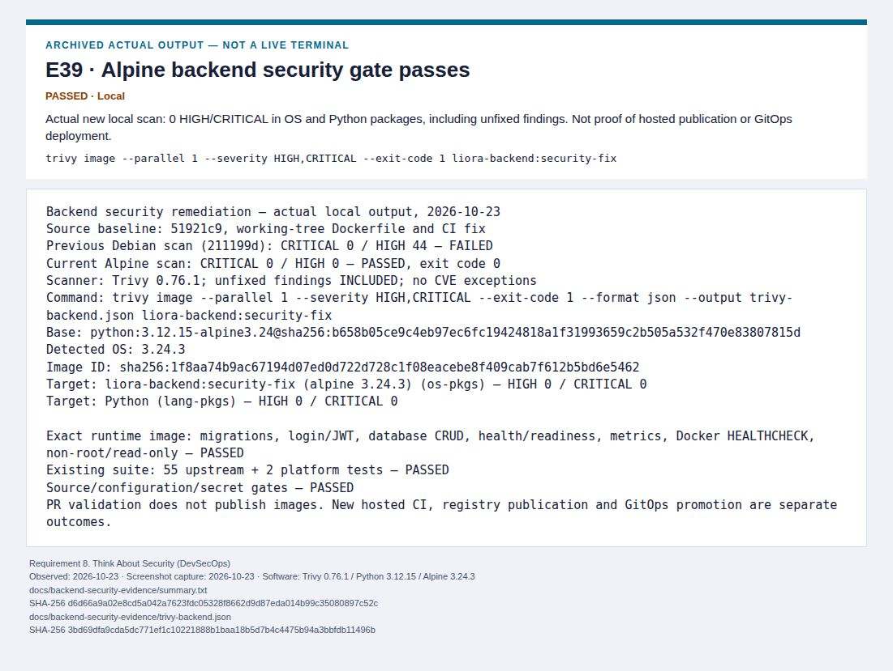
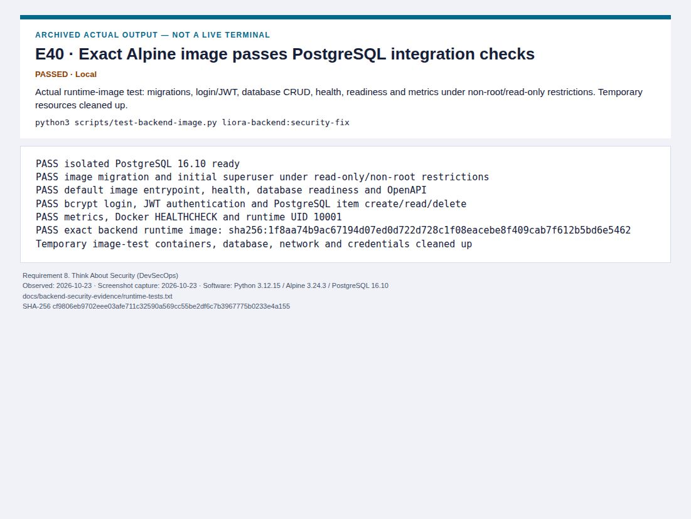
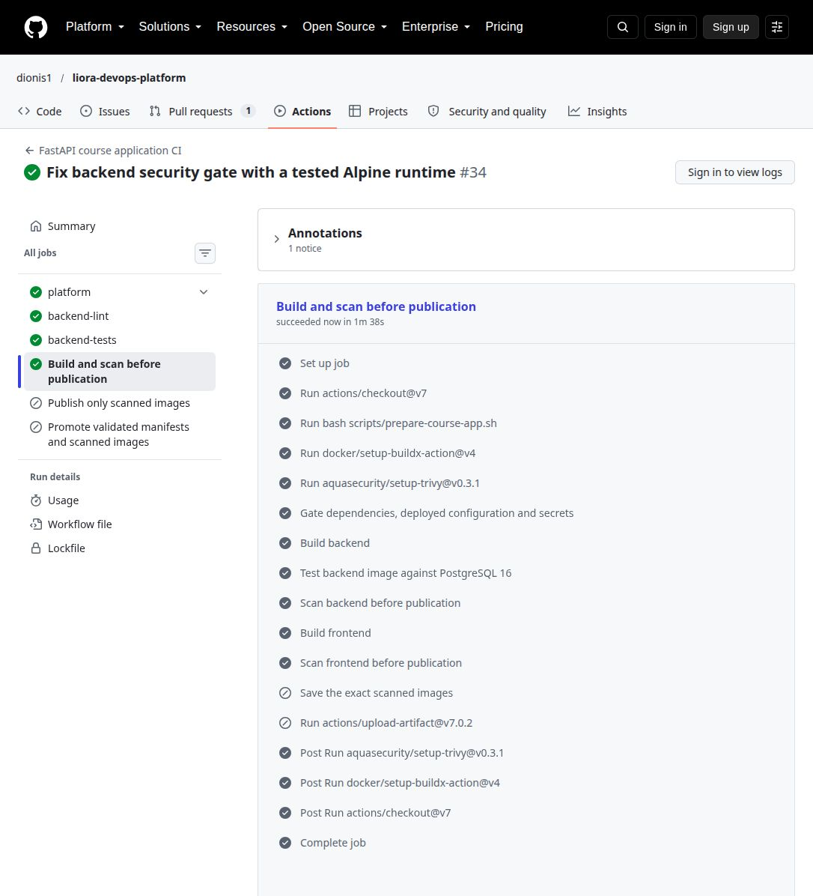

E12 · Current source security workflow passes
PASSED · actual-ui
Observed 2026-10-23 · Captured 2026-10-23
Patched dependency/configuration/secret scan; not a passing backend-image scan.

E28 · Security before and after remediation
FAILED · archived-output
Observed 2026-10-23 · Captured 2026-10-23
Counts derived from archived reports, not a new scan. Different frontend stages are labeled explicitly; no claim that all findings are fixed.

E29 · Historical Debian security gate fails closed
FAILED · archived-output
Observed 2026-10-23 · Captured 2026-10-23
Actual failed job output; 44 HIGH and 0 CRITICAL. Publication remains blocked.

E30 · Container security controls configured
PARTIALLY VALIDATED · configuration
Observed 2026-10-23 · Captured 2026-10-23
Static configuration. Fresh Docker fixture separately verified read-only/non-root operation; final Kubernetes deployment untested.

E31 · Default-deny policy and explicit database traffic
PARTIALLY VALIDATED · configuration
Observed 2026-10-23 · Captured 2026-10-23
Configuration only. Policy enforcement on a live cluster remains NOT YET TESTED.

E32 · Temporary credential access removed
PASSED · archived-output
Observed 2026-10-23 · Captured 2026-10-23
Cleanup evidence only. A read-only repository deploy key was not verified or installed; no key material is shown.

E39 · Alpine backend security gate passes
PASSED · archived-output
Observed 2026-10-23 · Captured 2026-10-23
Actual new local scan: 0 HIGH/CRITICAL in OS and Python packages, including unfixed findings. Not proof of hosted publication or GitOps deployment.

E40 · Exact Alpine image passes PostgreSQL integration checks
PASSED · archived-output
Observed 2026-10-23 · Captured 2026-10-23
Actual runtime-image test: migrations, login/JWT, database CRUD, health, readiness and metrics under non-root/read-only restrictions. Temporary resources cleaned up.

E41 · Hosted backend image security gate passes
PASSED · actual-ui
Observed 2026-10-23 · Captured 2026-10-23
Real GitHub job UI: image PostgreSQL integration and both strict image scans passed. Publication artifacts are skipped on PR events by policy.
